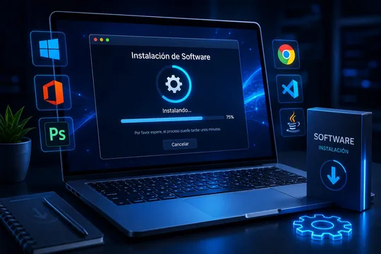

Windows y controladores
Instalación limpia del sistema con los controladores del fabricante de su equipo, no los genéricos que Windows adivina. Esa diferencia se nota en el sonido, el video y la batería.
Servicio
Instalar no es solo darle a "siguiente". Un equipo queda bien cuando los controladores son los que corresponden, cuando los programas no se pelean entre ellos y cuando arranca sin veinte cosas encendiéndose de fondo.

Qué instalamos
Si usa un programa que no está en esta lista, pregúntenos igual. Lo que no conocemos lo estudiamos antes de tocarle el equipo.
Instalación limpia del sistema con los controladores del fabricante de su equipo, no los genéricos que Windows adivina. Esa diferencia se nota en el sonido, el video y la batería.
Word, Excel, PowerPoint y Outlook, con el correo ya configurado y funcionando. También alternativas gratuitas si su caso no justifica la licencia.
Instalación y configuración de los programas de facturación y contabilidad que se usan en el país, incluida la conexión con la base de datos si trabaja en red.
Programas de diseño gráfico, edición de video y modelado. Antes de instalar revisamos que su equipo los aguante: no sirve tenerlos si se arrastran.
Antivirus configurado y andando, no la versión de prueba que caduca en un mes y deja el equipo descubierto sin que usted se dé cuenta.
Correo que no entra, impresora que no aparece, carpetas compartidas. Todo esto se resuelve por conexión remota el mismo día.
Licencias
Es la conversación que casi nadie tiene con el cliente, y la que más plata le puede ahorrar. No todo programa necesita licencia paga, y no toda alternativa gratuita sirve para lo que usted hace.
La decisión de qué comprar es suya. Nuestro trabajo es que la tome sabiendo qué está pagando y por qué.
Un equipo recién instalado que arranca en dos minutos no está bien instalado. Revisamos qué se enciende solo y dejamos únicamente lo que usted usa.
Cómo funciona
01
Qué programas necesita y para qué trabaja. De ahí sale la lista, y le decimos qué le hace falta y qué le sobra.
02
Primero la copia de sus archivos. Después el sistema, los controladores y los programas, en ese orden y no al revés.
03
Se abre cada programa y se revisa que el correo entre y la impresora responda. Se entrega funcionando, no "listo para configurar".
Si el equipo va lento después de instalar todo, el problema puede no ser el software: vea por qué se pone lento un computador. Y si va a empezar de cero, mire cómo armamos un equipo completo.
Antes de empezar
No, si se hace con respaldo previo. Antes de tocar el disco copiamos sus documentos, fotos y escritorio. Si el equipo trae un solo disco y hay que formatear, se lo avisamos y confirmamos con usted qué se respalda.
La mayoría se hace en remoto, sin mover el equipo: programas, correo, impresoras, antivirus y configuración. Solo la reinstalación completa de Windows desde cero requiere tenerlo en el banco.
Le decimos qué necesita licencia de verdad, qué trae el equipo incluido y en qué casos existe una alternativa gratuita que hace lo mismo. La decisión de qué comprar es suya; nuestro trabajo es que la tome informado.
Instalar un programa y configurarlo toma menos de una hora. Un equipo desde cero con Windows, controladores y todos los programas de trabajo toma entre cuatro y ocho horas, normalmente el mismo día.
Con saber qué programas usa y qué equipo tiene, le decimos si se puede hacer en remoto hoy mismo o si conviene traerlo.